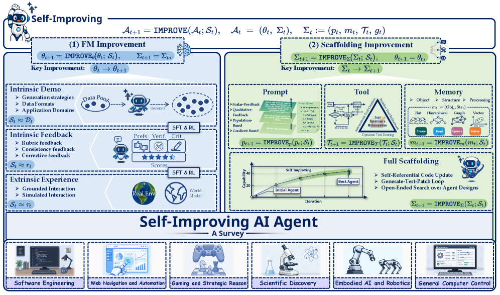
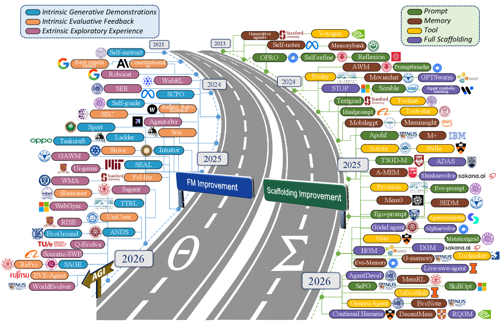

Survey: Self-Improvement in Modern Agentic Systems (239 papers)
TL;DR
- "Self-Improvements in Modern Agentic Systems: A Survey" (arXiv 2607.13104, July 2026; the items.json entry lacks the id, but the paper was located via search) curates 239 papers on how agents improve themselves, with Jürgen Schmidhuber as senior author. It is 97 pages with 12 figures, plus a living project hub at selfimproving-agent.github.io.
- The organizing formalism: a modern agent is a configuration coupling a foundation model with an operational scaffold (prompts, memory, tools, control logic), and self-improvement is a self-induced update operator that obtains and commits updates to either the model parameters or the scaffold components.
- Per the project hub's description, the corpus splits into 73 papers on foundation-model improvement and 166 on scaffold improvement across 15 fine-grained sections — a 2:1 tilt toward scaffold-side improvement that itself says something about where the field's practical action is.
Why this matters
The self-improving-agents literature has been fragmenting into subcommunities that barely cite each other. On one side: weight-updating methods — self-training, RL from self-generated tasks, on-policy distillation, self-play. On the other: scaffold-updating methods — prompt evolution, memory systems, skill libraries, tool synthesis, and agents that rewrite their own harness code. This reading list is a microcosm of the split: AREX and Skill Self-Play update weights; MSCE, OpenSpace, CORE, and the recursive-harness papers update scaffolds. Papers in each camp claim "self-improvement" while meaning operationally different things, with different cost profiles, different failure modes, and different guarantees.
A survey that forces both camps into one formal frame is therefore genuinely useful, not just bibliographic housekeeping. The choice of update target is the single most consequential design decision in this space: weight updates are expensive, compounding, and hard to roll back; scaffold updates are cheap, inspectable, and reversible, but bounded by the frozen model's capability. Having Schmidhuber on the author list also closes a historical loop — his Gödel machine (2003) is the canonical formalization of a system that provably rewrites its own code, and the modern scaffold-rewriting agents (Darwin Gödel Machine, recursive harness self-improvement) are its empirical descendants. The survey positions today's engineering-driven work inside that older theoretical lineage.
The core idea
The insight is definitional, and it is sharper than it looks. Define an agent not as a model but as a configuration c = (foundation model, scaffold), where the scaffold comprises prompts, memory, tools, and control logic. Then self-improvement is not "the agent gets better" but a specific mechanism: a self-induced update operator — the system itself, not an external engineer, obtains an update (from its own experience, feedback, or generated data) and commits it to some component of c.
This yields a clean two-axis taxonomy: what is updated (model parameters vs. each scaffold component) crossed with what signal drives the update (per the hub's breakdown: intrinsic demonstrations, intrinsic evaluative feedback, extrinsic experience). Every paper in the 239 lands in a cell. Crucially, the operator view makes "the agent edits its own control logic" (recursive scaffolding) a first-class category rather than an exotic afterthought — the category where the update operator can modify the very machinery that performs updates, which is where recursive self-improvement in the strong sense lives.

Figure from the paper: Overview of self-improvement paradigms for modern AI agents, categorized into two primary pathways by what is modified — Foundation Model Improvement (parameters \(\theta_t \to \theta_{t+1}\)) and Scaffolding Improvement (\(\Sigma_t \to \Sigma_{t+1}\)).
How it works
As a survey there is no method pipeline, but the document's architecture is the contribution, so it is worth mapping (structure below follows the abstract and the project hub's section listing; the fine-grained sub-organization is inferred from the thread — verify in the paper).
The formalism, in the paper's own notation. An agent at improvement step \(t\) is a configuration
where \(\theta_t\) are the foundation-model parameters and the scaffold \(\Sigma_t\) bundles prompts \(p_t\), memory \(m_t\), tools \(\mathcal{T}_t\), and control logic \(g_t\). Self-improvement is one generic update:
the operator \(\mathcal{U}\) consumes the agent's own history plus experience \(\mathcal{E}\) gathered by the current policy \(\pi_{\theta_t,\Sigma_t}\) in context \(\mathcal{C}_t\). The two branches of the taxonomy are exactly which argument the specialized operator commits to, given a self-induced signal \(\mathcal{S}_t\) (demonstrations \(\mathcal{D}_t\), evaluative feedback \(e_t\), or exploratory experience \(\tau_t\)):
A pseudocode-style decision tree for placing any paper in the taxonomy:
What does the self-induced update commit to?
├─ model parameters θ → Branch 1: foundation-model improvement
│ which signal S_t drives it?
│ ├─ self-generated data D_t → intrinsic demonstrations (self-instruct, STaR lineage)
│ ├─ own judgments e_t → intrinsic evaluative feedback (self-reward, verifiers)
│ └─ environment rollouts τ_t → extrinsic experience (agentic RL, on-policy distillation)
└─ scaffold Σ = (p, m, T, g) → Branch 2: scaffolding improvement
which component?
├─ prompts p → prompt evolution (GEPA/ADAS-style search)
├─ memory m → traces, reflections, playbooks (MSCE, CORE)
├─ tools T → tool/skill synthesis (Voyager, OpenSpace)
└─ control logic g → recursive scaffolding (DGM, harness rewriting)
Updates both θ and a scaffold component? → hybrid (e.g. Skill Self-Play)
Also updates the evaluator/benchmark? → coevolution (2607.17352, Red Queen)

Figure from the paper: Timeline and taxonomy of self-improvement in foundation-model-based agents (2023–2026); the left lane is foundation-model improvement (\(\theta\)), the right lane scaffolding improvement (\(\Sigma\)).
Branch 1 — Foundation-model improvement (73 papers). Agents that commit updates to weights, driven by: - Model updates from intrinsic demonstrations: the agent generates its own training data — self-instruct-style data generation, rejection-sampling loops in the STaR lineage, self-play task generation. - Intrinsic evaluative feedback: the model's own judgments (self-consistency, self-reward, internal verifiers) become the training signal. - Extrinsic experience: environment interaction converted into gradient updates — agentic RL, on-policy distillation, tool-use RL.
Branch 2 — Scaffold improvement (166 papers). Agents that commit updates to the harness around a frozen model: - Prompt evolution: system-prompt and instruction optimization loops (the GEPA/ADAS-style search family). - Memory: experience stores that alter future behavior — episodic traces, reflection archives, evolving playbooks. - Tool use / tool creation: agents that synthesize, verify, and register new tools or skills for later invocation. - Recursive scaffolding: agents that rewrite their own workflow/control code, up to full harness self-modification.
The survey then covers applications, evaluation methodology, and open challenges. The evaluation chapter matters most for practitioners: measuring self-improvement requires separating capability gained from experience from capability the base model already had — exactly the confound the CL-Bench entry in this reading list shows most memory-system papers fail to control for.
The GitHub/hub companion is maintained as a living index, which is the right call for a field moving this fast — 15 sections' worth of taxonomy will need new cells within months.
Results
There are no experimental numbers to report; the quantifiable content is the corpus itself: 239 papers, split 73 model-side / 166 scaffold-side, organized into 15 sections, in a 97-page document. The 2.3:1 scaffold-to-model ratio is the survey's most interesting implicit finding: most self-improvement research today avoids touching weights. That is partly economics (no gradients, no GPUs, works on frontier APIs) and partly epistemics (scaffold updates are inspectable and revertible). Whether scaffold-only improvement has a lower ceiling than weight updates is the open empirical question the survey frames but — as a survey — cannot settle.
How it connects
This survey is effectively the index page for the self-improving thread of this reading list:
- Model-parameter branch: AREX (agentic mid-training + long-horizon RL for a recursively self-improving research agent) and Qwen's Skill Self-Play (proposer/solver/controller RL loop) are current instances of extrinsic-experience-driven model updates.
- Scaffold branch: MSCE (memory crystallized into callable skills), OpenSpace (self-evolving shared skill libraries), CORE (contrastive reflection distilled into reusable insights), and the Anthropic Build/Reflect/Curate/Reuse playbook pattern are all memory/skill-cell citizens.
- Recursive scaffolding: Recursive Harness Self-Improvement (Sakana/Berkeley, 2607.15524), the Harness Handbook, A-Evolve (Amazon's evolve-any-agent infrastructure), and UNC's AutoResearchClaw building a SOTA memory system autonomously.
- The missing axis: the Co-Evolving Evaluation Criteria paper (Cambridge/NVIDIA, 2606.26294) and "Self-Improving Agents Should Evolve Their Benchmarks" (2607.17352) argue the evaluator must also be an update target — a component the configuration formalism can host but which fixed-benchmark self-improvement work ignores.
- Prior work: the Gödel machine (Schmidhuber, 2003) for the theory; STaR (Zelikman et al., 2022) and SPIN for model-side bootstrapping; Reflexion (Shinn et al., 2023), Voyager (Wang et al., 2023), and ExpeL for scaffold-side experience reuse; ADAS (Hu et al., 2024) and Sakana's Darwin Gödel Machine (2025) for scaffold search; AlphaEvolve (DeepMind, 2025) for evolutionary code improvement.
Critical take
- Taxonomies of fast-moving fields decay quickly. The model/scaffold boundary is already blurring: context distilled into weights, LoRA adapters treated as swappable "memory," continual-learning agents that fine-tune nightly. A binary update-target axis will strain against hybrids like Skill Self-Play, where RL updates weights and a skill library evolves simultaneously.
- The operator formalism is descriptive, not analytic. Defining a self-induced update operator organizes papers but does not by itself yield guarantees — nothing like the Gödel machine's proof-based self-modification criterion survives into the empirical taxonomy. Expect classification, not theory.
- Survey counts are not evidence. 166 scaffold papers do not mean scaffold methods work; CL-Bench's finding that naive in-context learning beats purpose-built memory systems suggests a nontrivial fraction of that 166 adds overhead, not learning. A critical survey should weigh papers by evidence quality; verify whether this one does.
- Safety treatment unknown. Self-induced updates to control logic are precisely where alignment risk concentrates (cf. reward hacking of self-evaluators in the Red Queen paper's motivation). How deeply the challenges chapter engages this is worth checking in the full text.
- Details of the 15-section structure beyond the hub's category list are inferred from the thread — verify in the paper.
If you remember three things
- Agent = model + scaffold; self-improvement = a self-induced update operator over either — this vocabulary lets you place any paper in this literature in one sentence.
- The field's center of gravity is scaffold-side (166 of 239 papers): cheap, inspectable, gradient-free — but its ceiling relative to weight updates is unresolved.
- Use the survey (arXiv 2607.13104, hub: selfimproving-agent.github.io) as the map for this reading list's self-improving thread; the evaluation confound it highlights — experience-driven gain vs. latent base capability — is the first question to ask of any self-improvement claim.